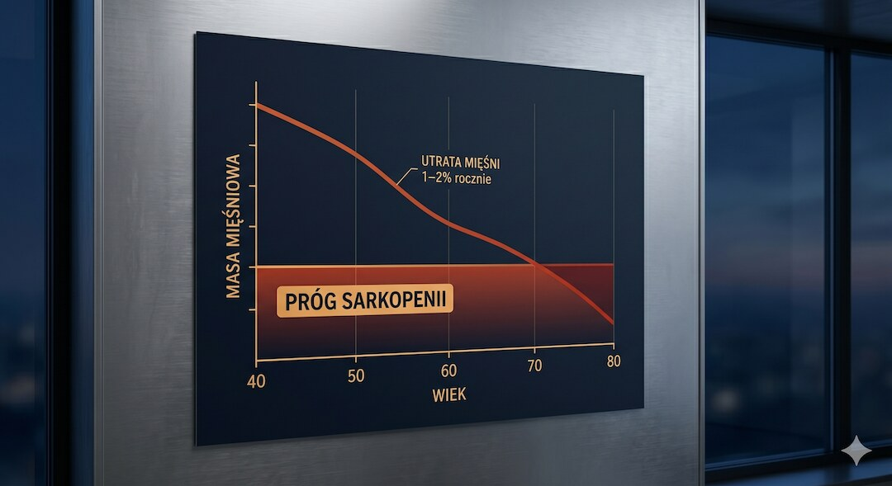
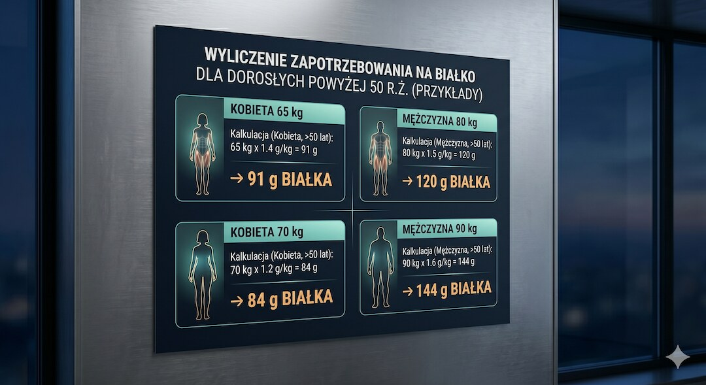
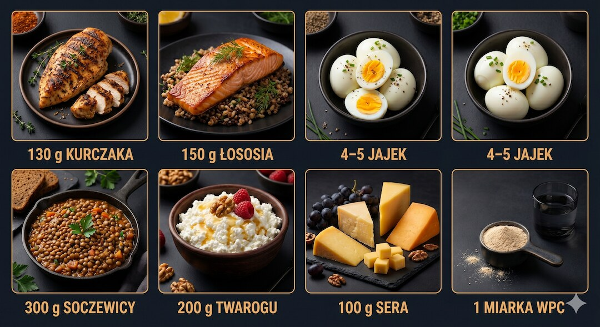
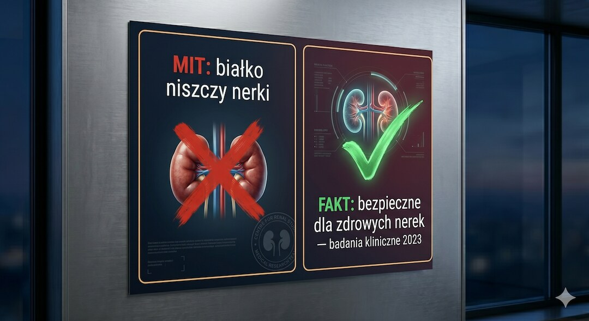
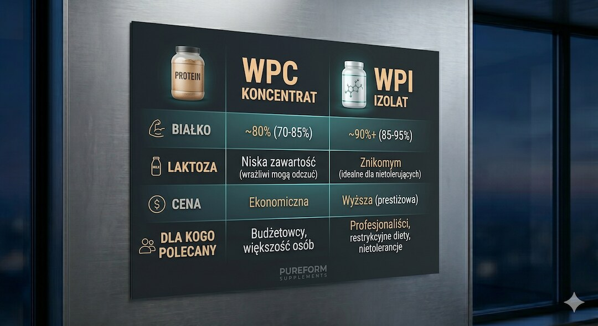
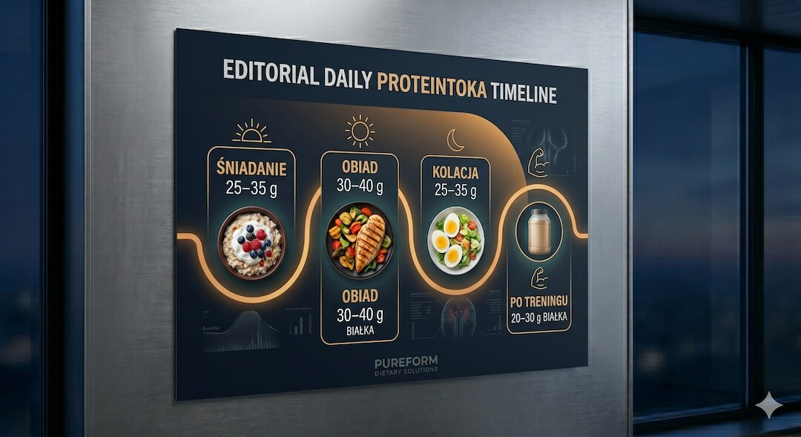
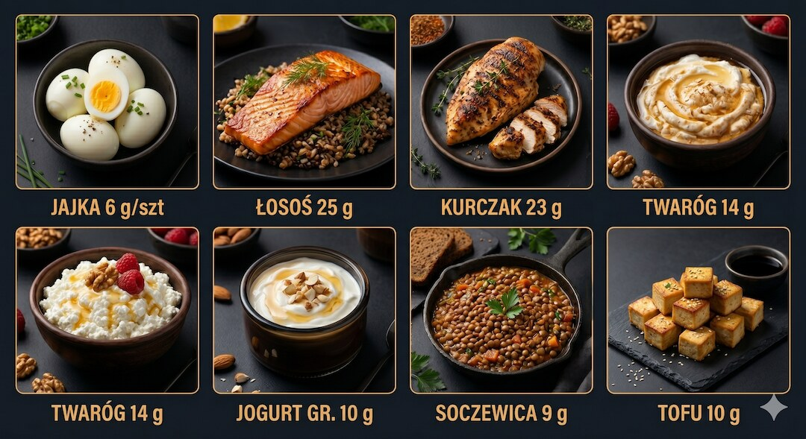

Po pięćdziesiątce nasze mięśnie stają się coraz bardziej głodne białka — a my jemy go coraz mniej i wchłaniamy gorzej. Grzesiek wyjaśnia, ile naprawdę potrzebujemy, jak to rozłożyć w ciągu dnia i dlaczego odżywka białkowa to nie „chemia dla kulturystów”, lecz praktyczne rozwiązanie dla każdego aktywnego dorosłego.
Szybka odpowiedź
Gdy ukończysz 50 rok życia, Twoje zapotrzebowanie na białko rośnie do 1,2–1,6 g/kg masy ciała dziennie, co oznacza konieczność zjadania 25–40 g białka w każdym z 3–4 posiłków, a wysokiej jakości odżywka serwatkowa WPC stanowi w pełni bezpieczne, praktyczne, szybkie i wygodne uzupełnienie codziennego menu.
Kluczowe wnioski
- Zapotrzebowanie na białko po 50-tce rośnie do 1,2–1,6 g/kg masy ciała z powodu oporności anabolicznej.
- Aby zapobiec utracie mięśni (sarkopenii), dzienną dawkę białka należy rozłożyć na 3–4 posiłki po 25–40 g.
- Odżywka białkowa WPC/WPI to bezpieczne i przebadane uzupełnienie diety, które nie obciąża zdrowych nerek.
- Podstawą żywienia po pięćdziesiątce powinno być prawdziwe jedzenie: jaja, chudy drób, ryby oraz strączki.
Dlaczego po 50-tce potrzebujesz więcej białka, nie mniej?
Wbrew intuicji, wraz z wiekiem zapotrzebowanie na białko nie maleje — ono rośnie. Zjawisko nazywane opornością anaboliczną sprawia, że organizm osoby po pięćdziesiątce potrzebuje znacznie więcej aminokwasów, żeby zbudować tę samą ilość tkanki mięśniowej co organizm dwudziestolatka. Mówiąc wprost: żeby osiągnąć ten sam efekt, musisz dać mięśniom więcej surowca do pracy.
Mechanizm jest dobrze opisany naukowo. Receptory mięśniowe odpowiedzialne za uruchamianie syntezy białek stają się mniej wrażliwe na leucynę — kluczowy aminokwas sygnalizujący „buduj”. To tak, jakby zwiększono próg „głośności”, od którego mięsień zaczyna słuchać. Żeby go przekroczyć, potrzebujemy nie tylko więcej białka ogółem, ale i lepszych jego źródeł — bogatszych w leucynę i inne aminokwasy egzogenne.
Efektem długotrwałego niedoboru białka jest sarkopenia — postępująca utrata masy i siły mięśniowej. Szacuje się, że nieleczona sarkopenia prowadzi do upadków, złamań i utraty samodzielności. Po 50. roku życia tracimy bez interwencji nawet 1–2% masy mięśniowej rocznie. Odpowiedź? Trening siłowy i wystarczające białko w diecie. Więcej o sarkopenii przeczytasz tutaj.

Ile białka dziennie po 50. roku życia? Konkretne dawki?
Oficjalne normy WHO (0,8 g na kilogram masy ciała) określają jedynie minimum zapobiegające niedoborom. Dla aktywnej osoby po pięćdziesiątce to za mało. Aktualne wytyczne geriatryczne wskazują zakres 1,2–1,6 g/kg masy ciała jako optymalny do zachowania zdrowia i mięśni.
Jak przeliczyć to na konkretną osobę? Kilka przykładów:
- Kobieta, 65 kg, aktywna fizycznie: 65 × 1,4 g = ok. 91 g białka dziennie
- Mężczyzna, 80 kg, trening 3× w tygodniu: 80 × 1,5 g = ok. 120 g białka dziennie
- Kobieta, 70 kg, spacery codziennie: 70 × 1,2 g = ok. 84 g białka dziennie
- Mężczyzna, 90 kg, siłownia regularnie: 90 × 1,6 g = ok. 144 g białka dziennie
Ważna uwaga: jeśli masz nadwagę, przeliczaj zapotrzebowanie od masy ciała bez tłuszczu lub od docelowej masy ciała. Obliczanie od aktualnej masy osoby z otyłością zawyżałoby wynik, bo tkanka tłuszczowa białka nie potrzebuje.
Zanim zaczniesz rewolucję w diecie i znacząco zwiększysz podaż białka, warto skonsultować się z lekarzem i sprawdzić stan swojego organizmu. Zobacz, jak i jak często badać krew po 50. roku życia.

Ile to jest 30 g białka na talerzu? Prosty przelicznik?
Mówienie o 90 gramach białka dziennie jest dla większości osób abstrakcyjne. Znacznie pomocniejsze jest wiedzieć, jak te liczby wyglądają na talerzu — bo masa produktu to nie to samo co zawartość czystego białka. Przykładowo, 100 g piersi kurczaka dostarcza około 23 g białka. Poniżej znajdziesz prosty przelicznik, który warto zapisać na lodówce.
Co zawiera ok. 30 g białka?
- 130 g gotowanego kurczaka (pierś) lub indyka
- 150 g łososia lub tuńczyka (filety)
- 4–5 dużych jajek
- 200 g twarogu półtłustego lub chudego
- 300 g ugotowanej soczewicy lub ciecierzycy
- 100 g sera twardego (np. parmezan, gouda)
- 1 miarka (30 g proszku) odżywki WPC lub WPI
Z tego wynika, że aby zjeść 90–120 g białka dziennie, musisz mieć trzy posiłki z solidnym źródłem białka. Nie jest to trudne — ale wymaga świadomości i planowania. Większość osób po pięćdziesiątce osiągnie ten cel, dokładając do każdego posiłku porcję mięsa, ryby lub odpowiednik w nabiale lub produktach roślinnych.

Czy odżywka białkowa WPC niszczy nerki?
To jeden z najbardziej szkodliwych mitów w polskim żywieniu — i jeden, który realnie odbiera ludziom dostęp do przydatnego narzędzia. Osoby po pięćdziesiątce słyszą od rodziny, znajomych, a czasem nawet od lekarzy: „nie pij tych proszków, bo nerki ci padną”. Skąd pochodzi ten strach? Z badań na osobach z już istniejącą chorobą nerek, u których faktycznie wysokie spożycie białka może przyśpieszać uszkodzenia. Ale zdrowe nerki nie mają z tym problemu.
Badanie kliniczne opublikowane w International Journal of Environmental Research and Public Health (2023) oceniało bezpieczeństwo suplementacji białkiem serwatkowym u starszych mężczyzn z cukrzycą typu 2 i stwierdziło wprost: suplementacja WP była bezpieczną interwencją w odniesieniu do funkcji nerek. Inne przeglądy systematyczne potwierdzają, że u osób zdrowych bez chorób nerek spożycie białka w zakresie 1,2–2,0 g/kg/dobę nie powoduje uszkodzenia ani obniżenia funkcji nerek.
Wyjątki są dwa i są poważne: zdiagnozowana choroba nerek (przewlekła niewydolność, GFR poniżej 60) i kamica nerkowa o charakterze moczanowym. W tych przypadkach spożycie białka powinno być ustalane z nefrologiem. Dla wszystkich pozostałych — odżywka białkowa WPC jest po prostu wygodnym, czystym źródłem leucyny i aminokwasów, nie substancją toksyczną. Jak łączyć białko z kreatyną po 50-tce — sprawdź tutaj.

WPC vs WPI – którą odżywkę wybrać po 50-tce?
Na rynku dostępne są dwa główne rodzaje białka serwatkowego: WPC (koncentrat) i WPI (izolat) . Różni je stopień przetworzenia i zawartość laktozy. WPC zawiera zwykle 70–80% białka, niewielkie ilości tłuszczu i laktozę — może być problematyczny dla osób z nietolerancją laktozy. WPI jest bardziej przetworzony, zawiera ponad 90% białka, minimalne ilości tłuszczu i praktycznie zero laktozy.
Co wybrać po pięćdziesiątce? Proste zestawienie:
- WPC – dobry wybór, jeśli nie masz problemów z laktozą i szukasz ekonomiczniejszej opcji. Świetny do koktajli, owsianki, placuszków proteinowych.
- WPI – lepszy, jeśli masz nietolerancję laktozy, wzdęcia po WPC lub zależy ci na wyższym stężeniu białka przy niższej kaloryczności.
- Białko roślinne (soja, groch, ryż) – dobra alternatywa dla wegan; warto łączyć źródła dla pełnego profilu aminokwasowego.
- Kazeina – wolno wchłaniana, dobra na noc; mniej praktyczna jako codzienny suplement.
Dla zdecydowanej większości osób po pięćdziesiątce najlepszym wyborem jest dobre WPC bez zbędnych dodatków — bez słodzików, sztucznych barwników i wypełniaczy — używane jako uzupełnienie diety, nie jej zamiennik.
Wybór między WPC a WPI zależy głównie od Twojej tolerancji układu pokarmowego. Jeśli szukasz innych przebadanych suplementów wspierających mięśnie i mózg, sprawdź nasz kompletny przewodnik: kreatyna po 50-tce.

Jak rozłożyć białko w posiłkach, żeby zapobiec sarkopenii?
Nie tylko ilość białka ma znaczenie, ale też jego rozłożenie w ciągu dnia. Badania pokazują, że jednorazowa porcja powinna dostarczać około 25–40 g białka. Taka dawka optymalnie stymuluje syntezę mięśniową. Jedzenie całej dziennej puli w jednym posiłku jest znacznie mniej efektywne.
Optymalny rytm dla osoby po pięćdziesiątce wygląda tak:
- Śniadanie: 25–35 g białka — jajka, twaróg, jogurt grecki, omlet
- Obiad: 30–40 g białka — mięso, ryba, strączki z uzupełnieniem
- Kolacja: 25–35 g białka — ryby, drób, ser, tofu
- Przekąska potreningowa: 20–30 g białka w ciągu 1–2 h po treningu — odżywka lub posiłek
Szczególnie ważny jest posiłek po treningu: okno anaboliczne jest realne, choć nie tak wąskie, jak przekonywała stara literatura sportowa. Masz 2–3 godziny, a nie 30 minut. Ważniejsze niż czas to ilość i jakość białka — pierś kurczaka, shake z WPC, jajka lub jogurt grecki zrobią tu robotę równie dobrze.
Odpowiednia podaż i rozkład białka to dopiero połowa sukcesu w walce z utratą sprawności. Aby w pełni uruchomić syntezę białek mięśniowych, połącz dietę z ruchem. Dowiedz się, dlaczego trening siłowy to eliksir młodości po 50-tce.

Najlepsze naturalne źródła białka dla aktywnych po 50-tce?
Odżywka białkowa to wygodne uzupełnienie, ale podstawą zawsze powinno być prawdziwe jedzenie. Zanim sięgniesz po suplementy, zadbaj o to, by w Twojej diecie regularnie pojawiały się naturalne produkty wysokobiałkowe. Dostarczają one również cennych witamin i minerałów wspierających zdrowie po 50-tce.
- Jajka — 6 g białka na sztukę, doskonały profil aminokwasowy; mit o cholesterolu został obalony
- Ryby (łosoś, makrela, tuńczyk, dorsz) — 20–25 g/100 g, plus kwasy omega-3 działające przeciwzapalnie, bezcenne dla stawów i serca
- Drób (kurczak, indyk) — chude, tanie, wszechstronne; 22–24 g/100 g gotowanego mięsa
- Twaróg i ser cottage — 12–15 g/100 g; bogaty w kazeinę, świetny na kolację
- Jogurt grecki — ok. 10 g/100 g; żywe kultury bakterii jako bonus dla mikrobiomu
- Soczewica i ciecierzyca — 8–9 g/100 g ugotowanych; uzupełnij o źródło metioniny dla pełnego profilu
- Tofu i tempeh — 8–20 g/100 g zależnie od rodzaju; tempeh fermentowany, lepiej przyswajalny
Złota zasada: staraj się, by każde z trzech głównych posiłków zawierało co najmniej jedno z powyższych źródeł białka — i pilnuj porcji. To wystarczy, by osiągnąć dzienne cele bez zaawansowanego liczenia.

Najczęściej zadawane pytania
Ile białka dziennie po 50. roku życia?
Dla aktywnych osób po 50-tce normy geriatryczne wskazują zakres 1,2–1,6 g białka na kilogram masy ciała na dobę. Dla kobiety o wadze 65 kg to 78–104 g dziennie, a dla mężczyzny o wadze 80 kg — 96–128 g. Oficjalne minimum WHO (0,8 g) jest zbyt niskie z powodu oporności anabolicznej.
Czy odżywka białkowa WPC jest bezpieczna po 50-tce?
Tak — dla osób ze zdrowymi nerkami odżywka WPC lub WPI jest bezpieczna i dobrze przebadana. Badania kliniczne nie potwierdzają szkodliwości białka serwatkowego dla nerek u osób zdrowych. Jedynym przeciwwskazaniem jest zdiagnozowana przewlekła choroba nerek lub kamica moczanowa — w tych przypadkach konieczna jest konsultacja z nefrologiem.
Jak rozłożyć białko w posiłkach, by zapobiec sarkopenii?
Najskuteczniejsza strategia to 3–4 posiłki dziennie, każdy zawierający 25–40 g białka. Mięsień reaguje najsilniej właśnie na tę porcję leucyny; zjedzenie całego dziennego zapotrzebowania w jednym posiłku jest znacznie mniej efektywne. Szczególnie ważny jest posiłek w ciągu 2–3 godzin po treningu siłowym.
Jakie objawy wskazują na niedobór białka po 50-tce?
Chroniczny niedobór białka objawia się osłabieniem siły mięśniowej i chwytu dłoni, powolnym gojeniem ran, częstymi infekcjami, obrzękami kończyn dolnych, utratą włosów oraz przewlekłym zmęczeniem. Niedobór jest szczególnie groźny w tej grupie wiekowej, bo nasila sarkopeniję i zwiększa ryzyko upadków.
WPC czy WPI – które białko wybrać po 50-tce?
WPC (koncentrat serwatki) to dobry i ekonomiczny wybór dla osób bez nietolerancji laktozy. WPI (izolat) zawiera ponad 90% białka i praktycznie zero laktozy — lepszy przy problemach trawiennych. Oba są skuteczne; kluczowe jest wybieranie produktów bez zbędnych dodatków i traktowanie ich jako uzupełnienia diety, nie jej zamiennika.
Źródła
- Protein requirements during aging – IAAO method, PMC
- Dietary protein requirements of older adults with sarcopenia – Frontiers in Nutrition (2025)
- Protein Source and Muscle Health in Older Adults – PMC Literature Review
- Nutritional Interventions: Dietary Protein Needs and Influences on Skeletal Muscle of Older Adults – Journals of Gerontology (2023)
- Association of Protein Intake with Sarcopenia in Korean Older Adults – PMC Meta-Analysis (2024)
- Whey protein safety for renal function in older adults with T2DM – PMC RCT (2023)
- Effects of Whey Protein Supplementation on Older Adults – PMC Systematic Review with Meta-Analysis
- Investigating health implications of whey protein – Healthcare MDPI (2024)
Uwaga: Artykuł ma charakter informacyjny i edukacyjny. Nie zastępuje konsultacji lekarskiej, diagnozy ani leczenia.